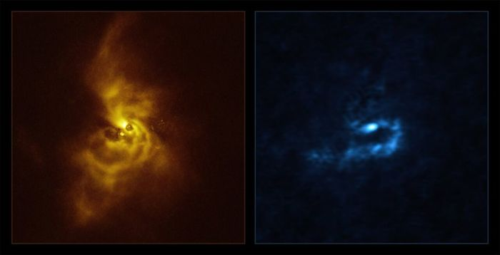

ასტრონომებმა ჩვენგან დაახლოებით 5 000 სინათლის წლის მოშორებით ფორმირების პროცესში მყოფი პლანეტური სისტემა დააფიქსირეს. იქ მდებარე ახალგაზრდა ვარსკვლავის გარშემო არსებულ მტვრის ღრუბელში არის მატერიის გროვები, რომლებიც შესაძლოა, იუპიტერის მსგავს აირის გიგანტებად ჩამოყალიბდეს.
თავად მნათობი V960 Mon-ის სახელითაა ცნობილი და ის სხვა ვარსკვლავის ნარჩენებისგან წარმოიქმნა. ახლა მის გარშემო უზარმაზარი დისკოა, რომელშიც ციური სხეულები უნდა დაიბადოს. ის მეცნიერებმა ძალიან დიდი ტელესკოპისა და ALMA-ს მეშვეობით პირდაპირ გადაიღეს.
V960 Mon-მა პირველად სპეციალისტების ყურადღება 2014 წელს მიიქცია, როცა მოულოდნელად აკაშკაშდა. მაშინ მათ სისტემა დეტალურად შეისწავლეს და მისი სპირალური შვერილებიც დააფიქსირეს. ისინი დიდ დისტანციაზეა გადაჭიმული, რომელიც ზომით მზის სისტემასაც კი აღემატება.
ახლა მეცნიერებმა ხმელეთზე განლაგებული ობსერვატორიებით დისკოში მტვრისა და აირის შეჯგუფებები გადაიღეს და სისტემის შიდა სტრუქტურა გამოავლინეს. პოტენციურად, ესაა პლანეტების წარმოქმნის პროცესის მაგალითი, რაზეც სპირალური შვერილების ფრაგმენტაცია და ერთად თავმოყრილი მატერიის მასა მიანიშნებს.
აირის გიგანტების გაჩენაზე ბირთვის აკრეცია, ანუ კლდოვანი მასის გარშემო მტვრის მოგროვება და გრავიტაციული არასტაბილურობა (დისკოში მტვრისა და აირის კოლაფსი) მიუთითებს. V960 Mon-ის სისტემაში ეს ორივე მოვლენა შენიშნეს, განსაკუთრებით კი აღსანიშნავია მეორე მექანიზმი, რომელსაც პლანეტურ მასშტაბებზე პირველად დააკვირდნენ.
ავტორები გეგმავენ, რომ დისკო და მატერიის შეჯგუფებების ქიმიური შემადგენლობა უკეთ გამოიკვლიონ.